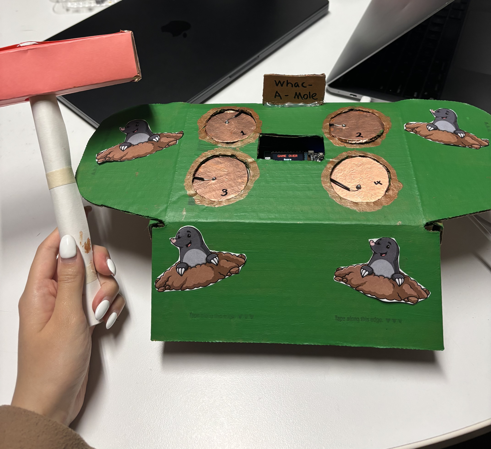
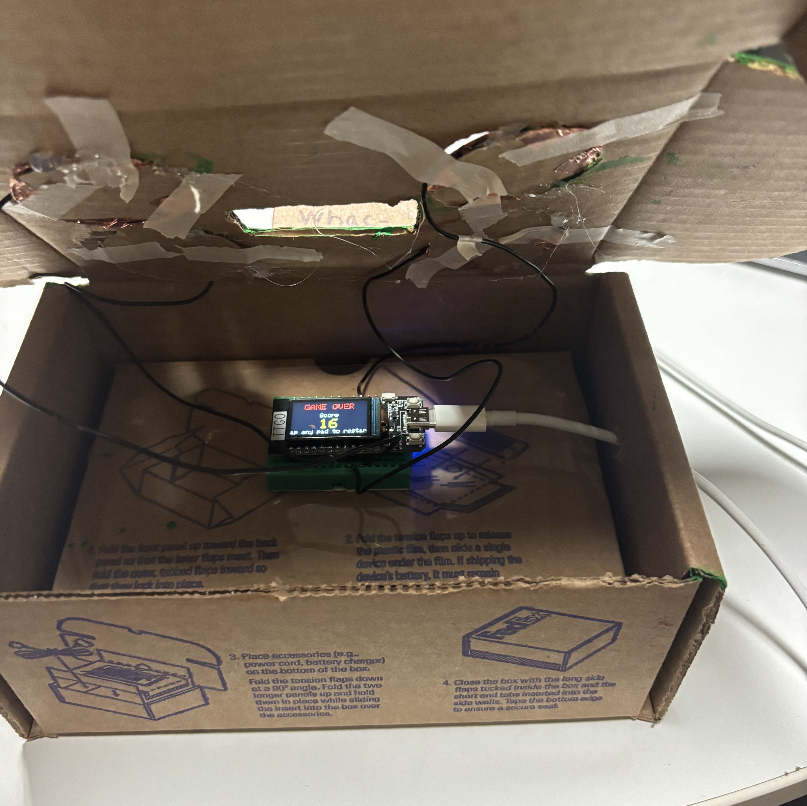
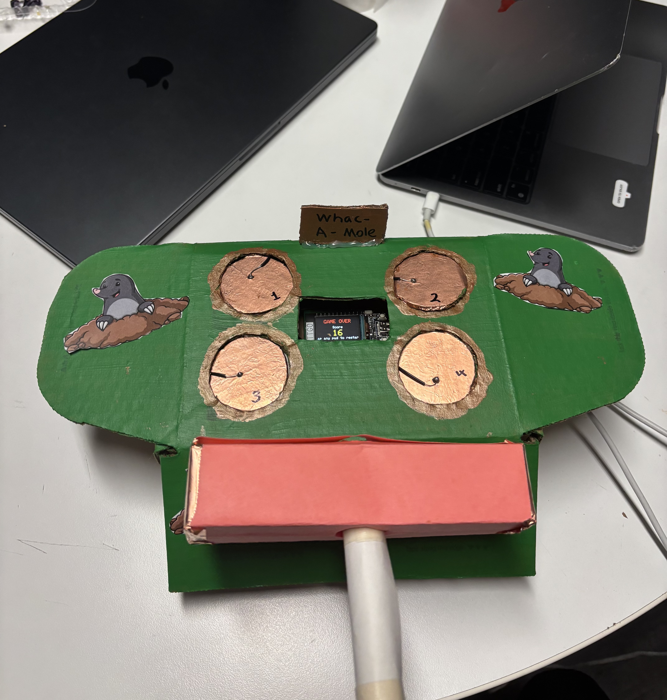
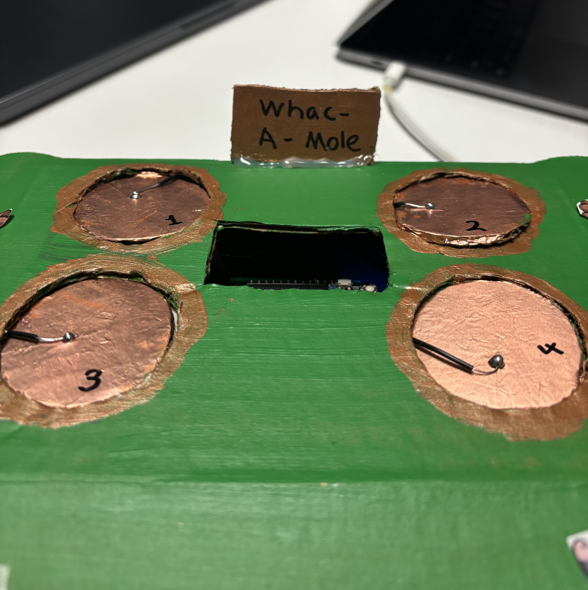

Whack-a-Mole on ESP32
An interactive Whack-a-Mole arcade game on the ESP32 TTGO T-Display, using homemade capacitive touch pads (copper tape) as the only controllers. Everything runs on the board — the ST7789 TFT is the game screen, the pads are the buttons, and no host computer is required to play.
The firmware is written in C++ with the Arduino framework under
PlatformIO Core 6.1.19, with graphics handled by
TFT_eSPI. USB supplies power and optional serial
debugging.
Video
Photos
Build and play views: enclosure, wiring, and the TFT in different moments of the game UI.



Technical challenges
Touch bring-up.
touchRead() expects GPIO numbers, not abstract touch
channel indices — mixing them up caused three of four pads to read
as dead or zero. A minimal serial test sketch to print raw values,
combined with the ESP32 datasheet, was what made the mapping
obvious.
Integer underflow (“ghost touch”).
Baselines were originally stored in uint16_t. When a
pad still read 0 before calibration, subtracting the
threshold wrapped to a huge value, so every pad looked permanently
pressed — the game jumped from start to game over almost instantly
and the display seemed frozen. Widening the math to
uint32_t and guarding against underflow fixed it.
Backlight vs. GPIO.
On the TTGO T-Display, the backlight is often driven from GPIO 4,
which conflicted with an early plan to use that line as a touch
pad. Resolving it meant picking pins that do not fight the panel’s
backlight control and aligning platformio.ini build
flags with the actual wiring.
Reflection
Embedded debugging is not desktop debugging — you cannot always stop the world on a breakpoint. Building a tiny serial harness to isolate each sensor before folding it into the full game saved a lot of guesswork. I also got a clearer picture of how capacitive sensing behaves and why a solid ground reference matters for consistent reads.
What I’d improve next
- Buzzer or small speaker for hit / miss audio
- Persist high scores in flash (NVS / EEPROM-style storage)
- Custom PCB instead of breadboard jumpers
- Multiplayer over WiFi with a second ESP32